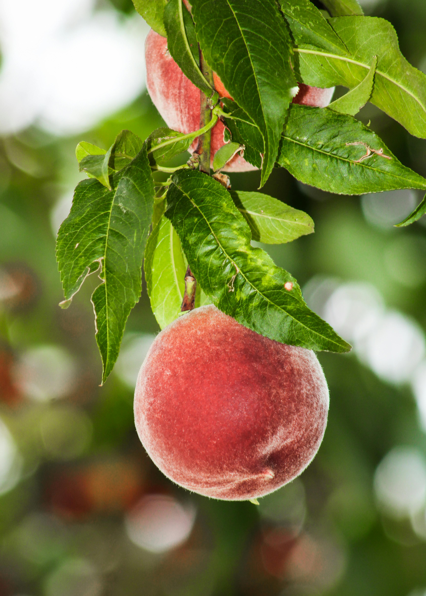

Peaches
Origin
The peach probably originated in China and then spread westward through Asia to the Mediterranean countries and later to other parts of Europe. The Spanish explorers took the peach to the New World, and as early as 1600 the fruit was found in Mexico.(britannica) A self-fertile fruit tree, so you only need one plant to produce fruit though it may take three to four years before it does so. The deciduous peach tree grows best in full sunlight, acidic and sandy soil, and moderate temperatures, but not the tropical temperatures that are necessary for citrus fruits like lemons. (the spruce)
Peaches
Care
Peaches like moderate temperatures and generally grow best in USDA growing zones 5a to 8a. However, you can select more cold or heat-tolerant varieties to expand the growing zone to include zones 4 and 9. (thespruce)
- Direct Sunlight
- Well Watered, soil is consistenly moist
- Plant a peach tree in the late winter or early spring while the tree is dormant
There are hundreds of peach cultivars to choose from. While peach trees can produce clingstone or freestone fruits, most varieties sold for home gardens are freestone.
More Research
Here are some articles that I got some of the above information/more research you can do on your own.